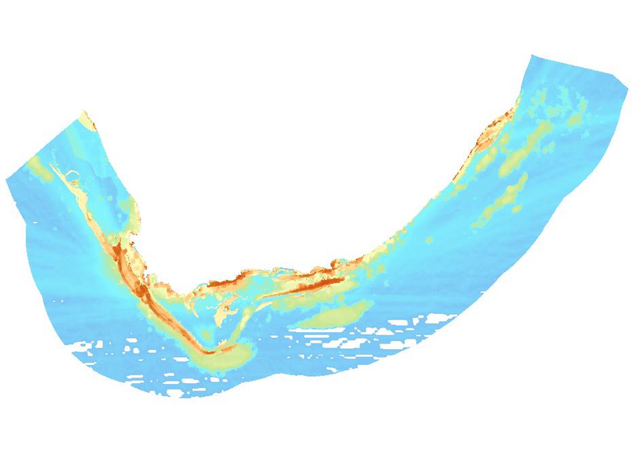
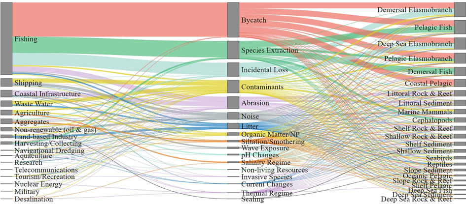

![]()

Marine ecosystems and species face pressures from an increasing range and intensity of human activities that continue to expand and diversify as South Africa develops its ocean economy. Fishing, particularly widespread industrial fishing, continues to exert the greatest pressures on marine biodiversity, affecting ecosystems, species and genetic diversity. The impacts of fishing need to be effectively managed to ensure sustainable fisheries that can support ocean life and livelihoods (Stephen – should we had one more sentence to this headline eg Mining, petroleum, port and harbour development and shipping also drive degradation with increasing pollution and climate change concerns?) and pressure mapping needs to be updated and improved for more accurate assessments, especially at finer scales.
Cumulative Pressures
South Africa uses cumulative pressure mapping as a key input into the assessment of marine ecosystem threat status. A total of 31 pressures have been mapped to support biodiversity assessment and spatial planning (Majiedt et al. 2019). These include historical pressures that may have ceased in some areas but have contributed to long term changes in ecological condition. Both the number and intensity of pressures is considered in cumulative pressure mapping.
Areas with high cumulative pressures include most bays, the area offshore of the Orange River, the shelf edge off the west and south coasts, large portions of the Cape inner and middle shelf, the Agulhas Bank and the KwaZulu-Natal Bight. The highest cumulative pressure in the marine realm was recorded in Saldanha Bay.
Hotspots of degradation and cumulative impacts are often driven by the location of ports and harbours, which alter shorelines and circulation, increase urbanisation and access for fishers, increase pollution, and facilitate the introduction and spread of invasive species. New ports and harbours can have substantial impacts on marine biodiversity and livelihoods and therefore warrant careful evaluation in spatial planning and decision-making.
Skein et al. (2022) examined 17 key pressures from 17 different sectors and their links to 23 key ecosystem characteristics (Figure 2) that have implications for ecosystem services. Fishing, petroleum (referred to as “Non-renewable (oil and gas)” in Figure 2) and shipping had the most widespread effects across the most ecosystem components, accounting for 30% of total linkage pathways identified, with fishing showing the most linkages overall. This is due to the extensive and complex nature of these three sectors, each of which comprise various components that may impact marine life in different ways. For example, offshore oil and gas sector activities include exploration (invasive and non-invasive), production and transport, each exerting different pressures on marine biodiversity. Anticipated renewable energy installations will have implications for marine ecosystems and species in future, through increased underwater noise, habitat modification and wildlife collisions, depending on the energy source (See below).

Pervasive pressures with multiple drivers (See Cross-cutting pressures) include pollution emanating from industrial, municipal and agricultural sources, ocean noise associated with activities such as shipping, mining and petroleum exploration, light pollution from artificial light at night especially in coastal areas, and invasive alien species.
Climate change and ocean acidification, primarily caused by increased greenhouse gas emissions, cause diverse and interrelated pressures that impact marine biodiversity and ecosystem health. Furthermore, by creating stressful environmental conditions (e.g. altered temperatures or reduced oxygen levels), climate change and ocean acidification increase the vulnerability of marine life to other pressures such as pollution or the impacts of fishing.
The indirect and cumulative impacts of expanding ocean activities need more attention in marine environmental management. Failure to account for potential cumulative and indirect impacts will preclude such impacts from being taken into account in spatial planning and decision-making, with likely negative implications for people and the environment.
Sector and pressure overviews
Pressure data sets are important inputs into spatial assessments and planning. Marine pressure data for South Africa is described in the 2018 NBA marine technical report (Majiedt et al. 2019) that explained and mapped each pressure, summarised patterns in their extent and intensity, and reviewed their known biodiversity impacts, noting any known mitigation measures or relevant work that was underway. Drawing on the above and information that is available in more recent Marine Spatial Planning reports (e.g. DFFE 2021 National data, ? etc), a brief summary of sectors and pressures is provided below (only references not previously cited in Majiedt et al. (2019) are indicated).
In general, updating and improvement of pressure data sets is required. Outdated pressure maps, pressure data that are missing or of a poor resolution, and inaccurate estimation of pressure impacts on ecological condition, all reduce the accuracy of biodiversity assessments and the efficacy of spatial planning. For example, missing pressure data in certain areas or for certain sub-sectors (such as small-scale fishing) omits key rightsholders and compromises integrated and equitable spatial planning. Long-term pressure data series are needed for ecosystem and species assessment (Key message B5) and finer scale mapping for more accurate assessment of ecological condition.
Fishing incorporates at least 19 South African fishing sectors representing industrial, commercial, small-scale, artisanal and recreational fisheries, with various methods employed to target a wide range of fish, invertebrate and seaweed resources. Fishing methods include trawling (demersal and mid-water), longlining (demersal and pelagic), purse-seining, linefishing, squid jigging, trap fishing, hand harvesting, beach seining, and wet and dry kelp harvesting.
More than 700 marine species are directly affected by fishing in South Africa (Van der Bank et al. 2019), with bycatch a key concern for trawl and longline fisheries. There have been improvements in managing incidental mortalities of seabirds, but bycatch of sharks, skates and rays is a driver of the threatened status of this group (Shark species assessments) with work underway to support improved management (DFFE 2022 NPOA, DFFE 2025 state of resources). More information on fisheries impacts on stock status or species threat status is reported in the Species assessment section.
Fisheries affect benthic and pelagic ecosystems through multiple pathways of impact (Skein et al. 2022), with the impact of the demersal trawl and longline fisheries on seabed habitats providing a straightforward example (Figure 2). Measures have been taken to manage the ecosystem impacts of trawl fishing through freezing the demersal hake trawl footprint, new co-developed spatial management measures and work to identify and protect Vulnerable Marine Ecosystems (Franken PhD, Sink et al. 2025).
Unsustainable fishing includes overfishing of target or bycatch species and fishing practices that can have severe impacts on biodiversity and ecosystems. Overfishing can include unsustainable total numbers of fish being caught and overharvesting of specific size or age classes that are critical for maintaining population growth and fishery sustainability. Some fishing gear types are known incidentally catch high numbers of non-target species (bycatch or incidental mortalities) and/or to impact seabed habitats. Illegal fishing and ghost fishing from lost fishing gear are difficult to map and qualify, but these unsustainable fishing practices can have negative impacts on the food web (trophic effects) and lead to ecosystem degradation.
Although industrial fisheries generally have greater and more widespread impacts on marine ecosystems and species, all sectors contribute to pressures in the marine realm. In terms of participation, the recreational fishery is the largest of all the fishing sectors in South Africa (460-550 000 fishers; Potts et al. 2021). This and the high technical capacity (e.g. Viana et al. 2025) of mobile recreational fishers dispersed across the coastline means that this sector has a significant impact on fisheries resources. Furthermore, the recreational fishery is currently ineffectively governed by inadequate policy and regulations and remains largely unmonitored and poorly enforced (Potts et al 2020), with high levels of non-compliance (~50%; Bova et al. 2022) and poor environmental behaviours being the norm in many recreational fisher communities (Kramer et al. 2017; Farthing et al. 2025). While some principally commercial linefish species have demonstrated recent recovery, many species, also targeted by the recreational fishery, remain overexploited (DFFE 2025), especially kobs (species assessment link)?? and some spardis, There is no seabream page, only a sparids page!!.
There is evidence of some pro-active, conscientious recreational fishers adopting voluntary catch-and-release and other best practices in a growing social movement of self-reform (Mannheim et al. 2018; Allison et al. 2023), However, while there is growing acceptance of catch-and-release (voluntary or mandatory) practice is an essential practice, there is a growing consensus that poor release practices can still contribute considerably to fishing mortality (e.g. Butler et al. 2017; Mann et al. 2018).
Overfishing can also impact genetic biodiversity of fishery species by reducing diversity and effective population size, compromising their resilience and ability to adapt (da Silva J, van Vuuren B, 2019). A recent study highlighted the long-term evolutionary costs of overfishing of the seventy-four seabream Polysteganus undulosus which has suffered drastic decline in genetic diversity and effective population size (Oosthuizen et al., 2024). Recent genomic studies on kingklip Genypterus capensis revealed three genetically distinct populations across southern African waters, with signs of local adaptation (Schulze et al., 2020), highlighting the need for sustainable, spatially specific, transboundary management. Similarly, the two African hake species (Merluccius spp.) italics? both show low genome-wide diversity. Shallow-water hake (M. capensis) shows three structured populations across the Benguela Current region, while deep-water hake (M. paradoxus), previously considered panmictic, now shows a split between the Atlantic and southwest Indian Ocean populations (Forde et al., 2023). Managing species with spatially distinct sub-populations as single stocks may further exacerbate their low genomic diversity.
South Africa has employed lethal shark control measures in the province of KwaZulu-Natal since 1952 to protect bathers from the risk of shark attack. These measures, comprising gill nets and baited drum lines, are implemented to reduce the local or resident population of sharks in the vicinity of certain beaches, thereby reducing the probability of an ocean user encountering a shark. These measures are implemented between Richards Bay and Port Edward with 13.5 km of nets and 177 baited drumlines deployed in summer and 0.2 km of nets and 270 baited drumlines in winter (See Improvements in shark control measures). Biodiversity concerns associated with the shark control program include the overexploited and threatened status of several target and bycatch species of cartilaginous fishes (shark, rays, and chimeras), catches of turtles and marine mammal species (marine species page, and potential ecosystem effects linked to the removal of predatory sharks. Of the 14 species of large sharks regularly caught by the KwaZulu-Natal sharks board, 11 are threatened. All of the affected marine mammal and turtle species are listed as Threatened or Protected species under the National Environmental Management: Biodiversity Act.
Lethal shark control measures add to the pressure on elasmobranchs from other fisheries, particularly longlining and trawl fisheries, but ecosystem effects from shark control programs are difficult to quantify and remain poorly understood. Historical and current nets were considered in the assessment of ecosystem condition, noting ongoing efforts to reduce the ecological impacts of shark control measures in KwaZulu-Natal.
Box within a box? Improvements in shark control measures: The KwaZulu-Natal Sharks Board has taken several steps to reduce the impacts of lethal shark control measures on marine species. These include reducing the average length of nets deployed per annum by 87% from a peak of 44.5 Km in 1992 to 5.7 km in 2025. Nets have been replaced with baited drum lines in several areas and a distinct seasonal strategy to reduce negative impacts while maintaining bather safety. In particular, nets are removed during the annual sardine run during winter to reduce marine mammal entanglements and mortalities on sharks and other species. Experimental work on mesh size, acoustic pingers and other innovations to reduce impacts have also been conducted and there is ongoing research to improve the evidence base for shark management. Overall, there is a reported 80% reduction in total catch and substantially reduced mortalities of sharks and other marine species (KZN Sharks Board pers. comm.). A network of researchers tag sharks and use satellite and acoustic tracking to better understand shark movement. Such data are very useful in better understanding shark distribution and risks in terms of location, season and other temporal trends.
Other provinces have implemented non-lethal measures that have little to no impact on marine life and these measures are not included as a pressure layer in this assessment. Local conditions affect the feasibility of different models with history of shark control, visibility, sea conditions, vantage points, launch site proximity and the local infrastructure and networks affecting options for shark control and bather safety. Bather exclusion nets and a shark spotter programme help protect bathers in Cape Town, while Plettenberg Bay has also implemented shark spotters and an innovative network to support bather safety (WHAT WORD TO PUT HERE?). Two other countries that have shark control programs recently introduced new non-lethal measures including drones to help detect sharks and smart drumlines that alert crew when an animal takes the bait so that they can launch immediately to free any bycatch and euthanise (severely injured) target sharks (Reunion Island) or translocate them (Australia).
Coastal and offshore mining is increasing in South Africa, targeting diamonds, heavy minerals and sand, and depending on the method of extraction, can have moderate to very severe negative impacts on biodiversity. Impacts include habitat destruction and modification (including beach morphodynamic type), sediment suspension and increased turbidity, pollution, noise, changes in the distribution and feeding habits of species and the introduction of alien species. Ecosystems that are impacted include beaches and shallow and deep benthic ecosystems on the shelf (Biccard et al. 2018, Rangel-Buitrago et al. 2023, Manona et al. 2024).
Suspended and deposited sediments caused by operations decrease feeding efficiency of filter feeders and clog fish gills, while increased turbidity from mine tailings can reduce primary production with reported changes in community structure. The potential for phosphate mining to commence remains a concern because the impacts of this activity could severely modify large areas of ecosystems and could jeopardise the sustainability of fisheries. The cumulative impacts of mining are a concern with increasing mining activity along South Africa’s west coast and shelf. Currently, there is no biodiversity information in the screening tool and limited information for the marine realm in the biodiversity and mining guidelines.
Marine petroleum activities in South Africa were initiated in 1969 with more than 300 offshore wells drilled to date and ongoing exploration by seismic survey. The impacts of petroleum activities span the impacts associated with exploration, production and transport. Petroleum production has been suspended at the Oribi/Oryx and Sable oil fields (Block 9 off Mossel Bay) and the F-A Gas field and satellites but field development plans are underway at the Ibhubesi gas field off Hondeklipbaai. While production has largely decreased in recent years in South Africa, exploration activities have expanded into deeper water (Figure 3) and there has been increasing concern about the negative impacts of seismic surveys, in particular, on marine species and ecosystems. This is because of the intense and widespread noise that these surveys generate, which can have varied, far-reaching and cumulative impacts on multiple species and ecosystem processes. A cumulative map of seismic surveys was recently compiled and there is some progress in planning for the integration of underwater noise into assessments and planning (Sink et al. 2024 seismic report). See also the dedicated section on pollution below.
Biodiversity impacts associated with drilling and production include habitat loss from infrastructure installation; chemical pollution from water- and oil-based drilling muds, noise and light pollution. These impacts can cause physical and physiological damage to marine organisms, disrupt feeding, communication and migration and alter species distributions and aggregations. Petroleum infrastructure including pipelines for transport can also introduce, provide refuge for and facilitate the spread of alien and invasive species. Oil spills, leaks and blowouts pose serious risks with the potential to cause catastrophic impacts to marine biodiversity by oiling marine organisms, degrading ecosystems, and disrupting ecological processes, while also causing health risks to people. The chemical dispersants used in cleaning up oil spills can also impact marine life, and in some cases, are considered more toxic than the oil itself.
Shipping is a widespread source of pressure in South Africa’s marine realm and is a key source of underwater noise and other pollution. South Africa is a maritime nation with considerable ship traffic and one of the highest concentrations of cargo ship and oil tanker traffic globally. While shipping is the dominant form of underwater noise in the ocean, affecting a broad range of marine species (Duarte et al. 2021), there are also other environmental and biodiversity impacts, including other forms of pollution (e.g. chemical pollution, accidental oil spills, air pollution and other), the introduction of invasive alien species through ballast water discharge and hull fouling, and ship strikes (collisions between vessels and large marine animals). South Africa still needs to promulgate the Ballast Water Act which has been in Bill form since 2013. More effective management of shipping in noise sensitive areas such as marine protected areas, including by regulating the maximum speed of vessels, can strengthen protection by reducing underwater noise levels and the risk of collisions. See also the dedicated section on pollution below.
Coastal development, including port development, is a significant cause of pressure on coastal and marine ecosystems, leading to ecosystem loss, interruption of physical and biological process, and compromises in ecosystem resilience and services (Majiedt et al. 2019, Claasens et al. 2022, Harris et al. 2025 beach paper , Harris et al in review coastal pressures paper ) (link to Linda coastal page?). Coastal development within the littoral active zone deprives beaches of the sand stored in dunes and reduces coastal resilience to storms, high wave-energy events and sea-level rise, increasing risks to coastal communities and infrastructure. Such development can require expensive artificial movement of sand or other coastal engineering solutions to mitigate downstream erosion. In addition to coastal development impacts, ports and harbours are the main points of introduction and refugia for invasive alien species, and activities associated with them contribute to ecosystem degradation from smothering, pollution, underwater noise and anchorage. Coastal disturbance is common at popular beaches and other accessible beaches (especially around access points), and includes trampling, dune destabilisation and disturbance of shore birds or other shore animals.
The biodiversity impacts of mariculture depend on the species, culture method, stocking density, feed type, husbandry practices and environmental conditions at the site. Mariculture along the South African coast includes farming of shellfish or finfish and takes the form of land-based operations that abstract seawater, pass it through a culture facility, and return it to the sea, and sea-based operations using long-lines, rafts, racks or cages suspended directly in the sea and a limited number of estuaries. Little research has been undertaken on the impacts of mariculture in South Africa but local work has highlighted the risks associated with eutrophication and the introduction of alien species, pathogens and diseases that can be transferred to wild stocks. For example, high stocking densities could potentially result in the evolution of native pathogens (especially viral and bacterial agents) to which wild fish do not have resistance. As such, mariculture can impact on ecosystem services.
Currently, sea-based mariculture takes place only in Saldanha Bay and Algoa Bay in South Africa. High retention and therefore lower rates of flushing of pollutants or elevated nutrient inputs in bays are likely to exacerbate the negative impacts of sea-based mariculture operations in these areas. Sea-based mariculture operations are also known to alter predator behaviour and movement patterns by causing them to aggregate in the vicinity of installations, and may therefore shift predation pressure on wild populations with resulting food web effects. Although there has been little success in sea-based aquaculture of bony fish in South Africa, mariculture remains a sector of projected growth, similar to petroleum and shipping.
Freshwater flow reduction to the coastal and marine environment occurs when water is abstracted from rivers or dammed higher up in the catchment, and/or the cycle of an estuary has been disrupted.This results in freshwater, and the accompanying sediment that is vital to many marine biodiversity processes, failing to reach the sea. By reducing input of sediment that forms and maintain beaches, mud habitats and other unconsolidated sediment ecosystems, flow reduction leads to physical habitat changes including loss of beach and mud habitat, impacts on ecological functions and services including nursery functions, environmental cues, productivity, nutrient provision and food web processes. Potential reductions in key fisheries catches with associated negative economic impacts have also been reported in South Africa. A third of South Africa’s freshwater flow in rivers is estimated to no longer reach the ocean, including approximately two-thirds of the potential freshwater flow of the Orange River and nearly a third of that for the Thukela River (the two largest catchments in South Africa). Sustaining the vital flow of freshwater to the sea requires an integrated and coordinated approach that combines the management of flow, water quality and ecological and built infrastructure (Key Message A7).
Wastewater discharge represents a significant source of pollution and includes a range of inputs, including industrial and municipal effluents, brine discharges from desalination plants, effluents from aquaculture operations, and stormwater and agricultural runoff (Porter et al. 2018, Majiedt et al. 2019, Ojemanye and Petrik 2022, Tyohemba et al. 2022).More than 3 billion cubic metres of waste is discharged annually into South Africa’s marine environment through estuaries and outfalls, with municipal wastewater treatment facilities accounting for a significant portion of this. Wastewater discharge impairs water and sediment quality, and causes changes in the primary producer and benthic invertebrate communities near discharge points. High organic and nutrient loading due to wastewater discharge causes excessive eutrophication, fuelling red tides, harmful algal blooms and anoxia, often leading to fish kills. Coastal groundwater discharge is similarly enriched by human settlements, impacting shore ecosystems.
Typically, coastal water quality is substantially degraded near major urban centres, with greatest negative impacts in areas with weak flushing and long retention, in particular bays. Associated microbial pollution can also have serious health and socio-economic impacts. For example, poor water quality has resulted in beach closures and loss of recreational value and tourism income. See also the dedicated section on pollution below.
Ammunition disposal was practised in demarcated areas of the offshore environment from 1970s until 1995, before the London Protocol (1996 Protocol to the 1972 Convention on the Prevention of Marine Pollution by Dumping of Wastes and Other Matter) came into effect. Dumped ammunition can cause damage to or smothering of ecosystems and habitat-forming species; potentially detonate, causing localised destruction; and corrode, causing pollution and toxicity, especially from heavy metals. Elsewhere, there is evidence of munition compounds bioaccumulating in marine foodwebs, which is predicted to increase with time and with changes in ocean chemistry. Presumably, dumped munitions in South Africa have corroded over the past 30-50 years, but the impacts are largely unknown.
Dredge disposal is the dumping at sea of accumulated sediment from dredge material leading to smothering, increased turbidity, decreased primary production and other potential impacts (Smith et al.1995, 2001). Dredging is a key service performed by the Ports Authority as part of harbour management and maintenance, whereby dredge material is collected from harbours to ensure that ships do not run aground. . The type of disposal methodology applied, as well as the quality of the sediment being deposited, may amplify or mitigate these environmental impacts.
Renewable energy production is important in achieving energy security, reducing climate change impacts and supporting socio-economic growth in South Africa. The potential for marine renewable energy (MRE) in South Africa includes offshore wind, wave, current and thermal energy sources. Although no MRE projects currently exist, there are plans for development, e.g. a floating offshore windfarm at Richard’s Bay and energy generation from the Agulhas current has been under discussion for several years. Depending on the energy source, potential impacts of MRE include habitat disturbance and loss during construction, changes in hydrology, localised upwelling and electromagnetic fields, collision risks with wind or current turbines for seabirds and ocean life and increased ocean noise. Wave and current devices may negatively impact marine mammals, turtles, and fish through collision risk, electromagnetic fields, and underwater noise, and marine benthic and pelagic habitats and communities could be impacted by changes to natural seawater flows and sediment transport. Small installations would likely have localised minor impacts but large commercial arrays could significantly alter marine systems over time.
Emerging renewable energy installations include planned photovoltaic solar plants for Saldanha and Cape Town, and planned green fuel (green hydrogen and green ammonia) initiatives for Boegoebaai, Saldanha Bay, and Coega. Green hydrogen development requires extensive new coastal and marine infrastructure, likely including desalination plants, with associated brine discharge being an important environmental concern for coastal ecosystems. Other potential impacts include pollution from the production and transportation of hydrogen derivatives, like ammonia or methanol, which use catalysts and chemicals that could contaminate soil or water if not properly managed.
Cross-cutting pressures
###Pollution (including underwater noise)
Pollution is a cross-cutting pressure linked to many sectors with chemical (including plastic), pharmaceutical, noise and light pollution all increasing. Plastic, both micro- and macro-plastic, is pervasive and has been recorded at great depths and distance from shore, although its main source is land-based pollution. Plastic pollution has impacts on many marine species through ingestion and entanglement, especially seabirds, turtles, sharks and fish. South African research is increasing and providing valuable insights into this global concern (Bakir et al 2020, Ryan 2020, Sparks and Immelman 2020, Ferguson et al. 2024), which recently has also been linked to the spread of alien and invasive species and identified as a vector for toxic metals (Awe et al. 2025). Other common pollutants in the marine realm are heavy metals and hydrocarbons, especially in ports and harbours (Melhorn et al. 2021, Mbandazi-Phorego et al. 2024).
Ingestion and bioaccumulation of microplastics, metals, pharmaceutical compounds, personal care products and other organic pollutants in animal tissues potentially leads to their biomagnification in marine food webs (Bakir et al. 2020, Ojemaye and Petrik 2022, Newman et al 2024). This poses toxic risks to lower and higher trophic level biota and humans who consume them. Bioaccumulation of pesticides and herbicides in coral reef organisms is an increasing concern (Porter et al. 2021, Tyohemba et al 2022), while high concentrations of metals, other chemicals, and pollutants have been detected in sediments (especially in ports and harbours), surf zones of popular recreational beaches and in sponges within submarine canyons. These pollutants have also been found in turtles and their eggs, seabirds and seabird eggs, fish, cetaceans, sharks and marine mammals.
Light pollution or artificial light at night can negatively impact species and ecosystems by interrupting species’ natural circadian rhythms, changing night-time activity through either negative or positive phototaxis (Duarte et. Al. 2019, Fobert et al. 2023). Feeding, breeding and resting behaviours are affected with impacts on turtle hatchlings and seabirds and beach invertebrates of particular concern (Duarte et al. 2019, Harris et al. 2025 beach ecosystem and species paper, Harris et al. in review pressure paper). For example, several beach species including the Endangered Cape pill bugs, Tylos capensis (nocturnal sandy beach isopods; Harris et al. 2025b) are significantly less active at night when exposed to higher light intensities, which reduces their foraging time. Light pollution can also affect navigation of seabirds and cause grounding with risk of injury or mortality (Heswell et al. 2022 ).
Noise pollution is an increasing concern, particularly in aquatic environments where sound conductivity is greater than in air and where many species rely on sound for prey location and communication (Nelms et al. 2016, Duarte et al. 2021, ). Sources of sound include seismic surveys (Sink et al. 2025 seismic report)), shipping traffic, bunkering (Pichegru et al. 2022), various other commercial activities, and boating. Elevated underwater noise can cause direct mortality, lower immunity and increase health risks, change species distributions and disrupt foraging when predators, prey, or both avoid noisy areas, and disrupt reproduction, communication and social behaviour.
Marine mammals and soniferous fish are particularly at risk, including commercially important species such as kingklip, recreationally important species such as grunter and threatened species such as dusky kob and Syngnathid seahorses and pipefish. Recently, penguins have shown sensitivity to underwater noise (Pichegru et al. 2022). Although there are many known impacts from underwater noise, there are still many gaps in our understanding of these pressures (Elliot et al. 2019) and how they may translate into ecosystem impacts. It is recommended that noise sensitive marine areas are proactively mapped and used to inform marine spatial planning and management (Sink et al. 2025 seismic report).
Invasive alien species
Invasive alien species have profound negative impact on marine biodiversity with increasing numbers of introduced marine species in South Africa (Miza et al. 2019, Robinson et al. 2020 book chapter). Alien species have the potential to displace native species, cause the loss of native genotypes, modify habitats, change community structure, affect food web properties and ecosystem processes, impede the provision of ecosystem services, impact human health and cause substantial economic losses. The main mechanisms of accidental introductions are ship fouling, ballast water and mariculture, with increasing recognition of the role of petroleum infrastructure and recreational boating in the introduction and intra-regional spread of invasive species. The expanding aquarium trade is also a source of introductions. Preventing marine invasives and limiting spread is vital as research shows that eradication in the marine realm is not feasible. This means that prevention is critical and key pathways, particularly ballast water and hull fouling, require monitoring (Loureiro et al 2021) and management action. South Africa needs to promulgate the Ballast Water Act which has been in Bill form since 2013 and invest in innovative methods and partnerships to reduce hull fouling and the spread of marine invasives.
Climate change
Approach
• Demersal Trawling (Inshore and Offshore)
• Kelp Harvesting
• Crustacean Trawling
• Subsistence Fishing
• Midwater Trawling
• Shark Control
• Linefishing
• Sea-based Aquaculture
• Recreational Fishing
• Coastal Development
• Demersal Longline Fishing
• Coastal Disturbance
• Pelagic Longline Fishing
• Mining
• Tuna Pole Fishing
• Petroleum Activities
• Small Pelagic Fishery
• Invasive Species
• Netfishing: Gillnet Fishing
• Port and Harbour Activities
• Netfishing: Beach-seine Fishing
• Shipping
• West Coast Rock Lobster Harvesting
• Wastewater Discharge
• South Coast Rock Lobster Harvesting
• Ammunitions Dumping
• Squid Harvesting
• Dumping of Dredge Material
• Abalone Harvesting
• Freshwater Flow Reduction
• Oyster Harvesting
Technical documentation
Git repositories
- Cumulative pressure and condition calculations and mapping: gitlab.com/marine_pressure_layers/pressure_layers
Key publications
References
Recommended citation
Sink, K. 2025. Pressures. National Biodiversity Assessment 2025. South African National Biodiversity Institute. http://nba.sanbi.org.za/.